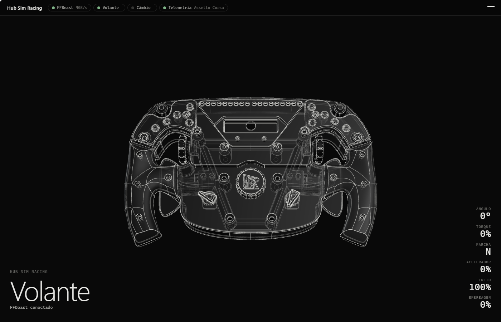
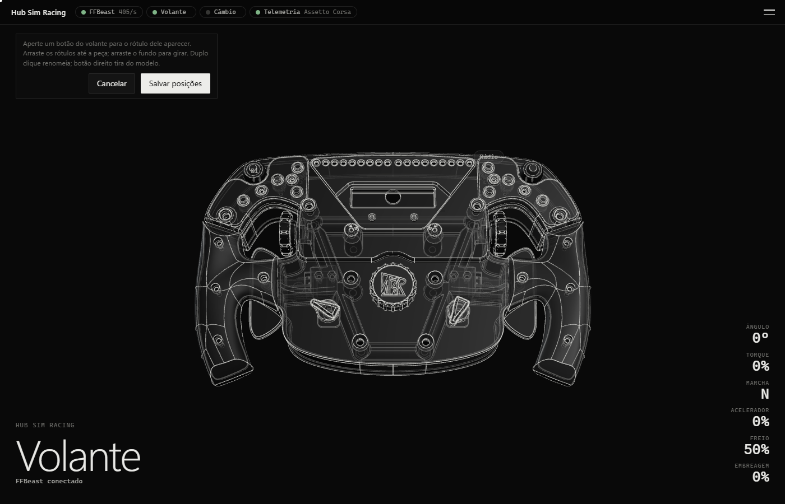
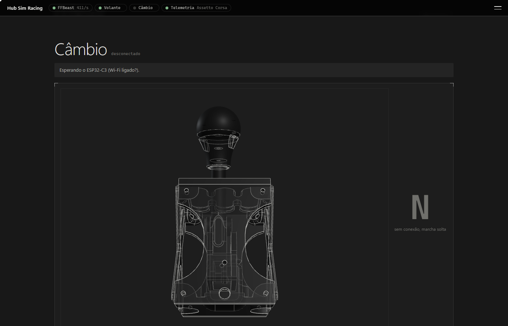
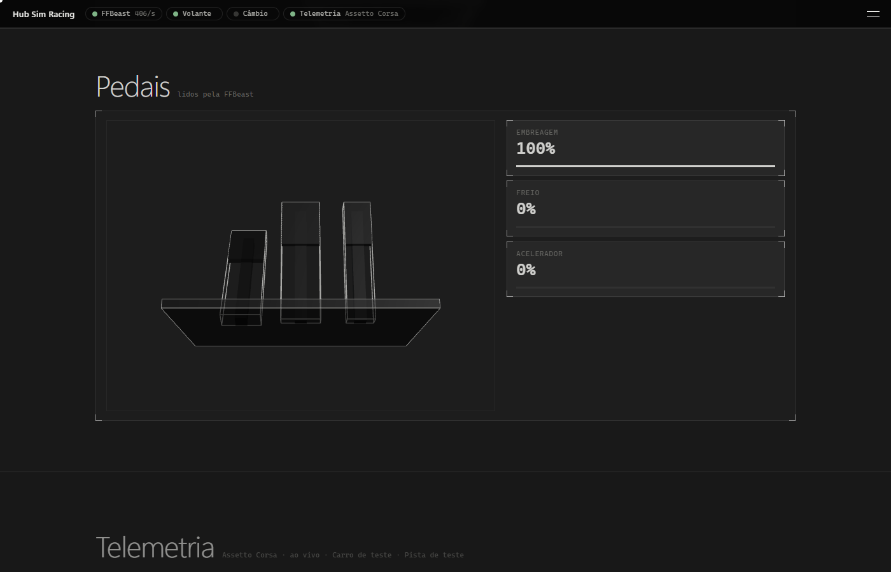
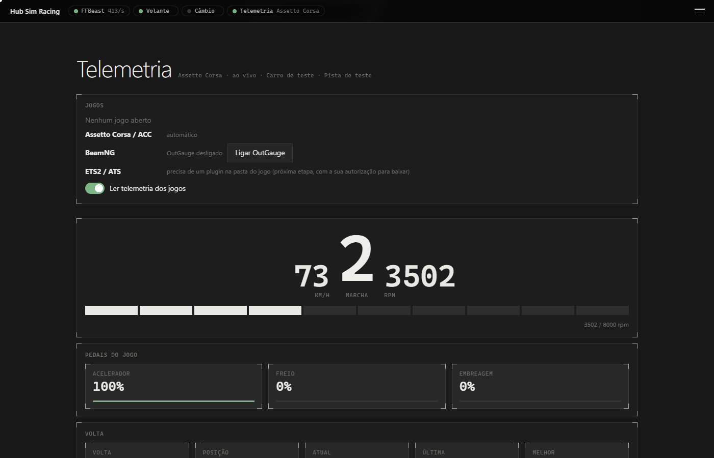
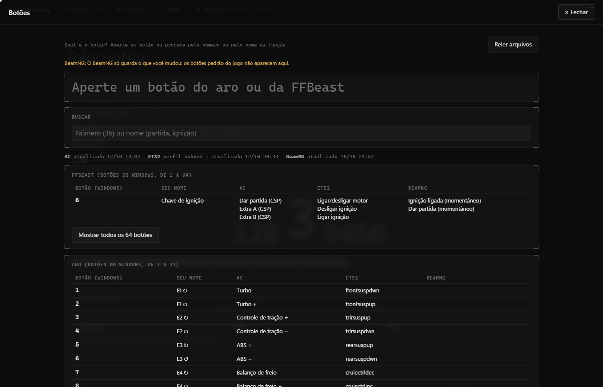
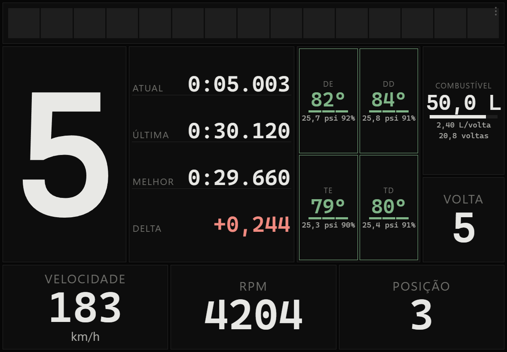
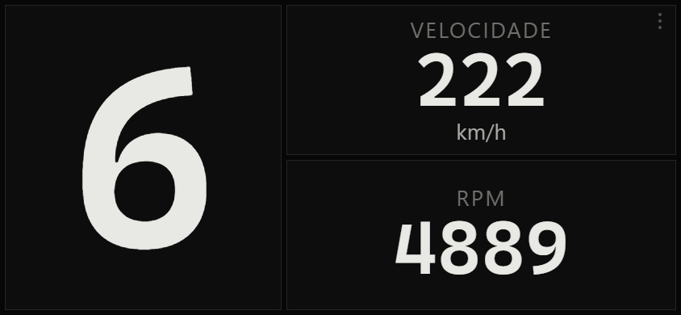
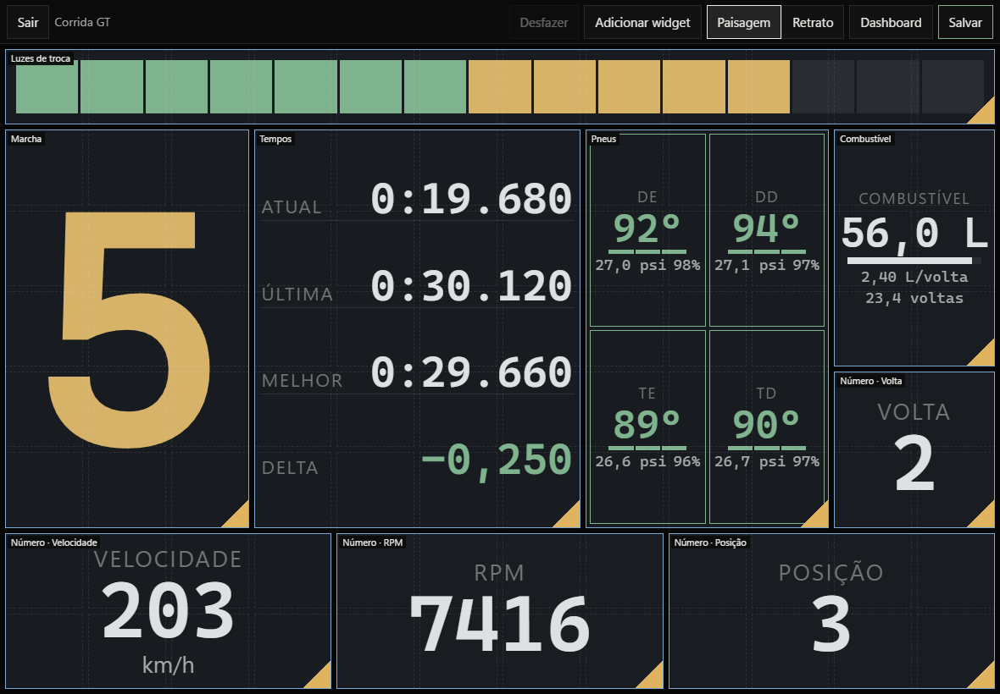

Para Windows · gratuito
Hub Sim Racing
O acabamento de um equipamento comercial para o seu sistema DIY
Sua base direct drive, o volante, o câmbio e os pedais numa janela só. Você vê tudo em 3D, acompanha a telemetria dos jogos, usa o celular como painel e nunca mais esquece qual botão é qual em cada jogo.

O que ele faz
Feito para quem montou o próprio sistema
Tudo em 3D
O volante do topo é o seu volante: gira no mesmo sentido do físico e mostra ângulo, força no volante, marcha e pedais. Exporte o aro, o câmbio e os pedais do seu projeto do Fusion.
Base FFBeast
Leitura contínua do ângulo e dos pedais, a força que o jogo manda ao volante com o torque estimado em Nm, e os ajustes do dia a dia na mesma tela. Nada vai para a base sem o clique em Aplicar, no PC.
Telemetria dos jogos
Assetto Corsa, ACC e BeamNG.drive: marcha, RPM, pedais, tempos, pneus e o mapa da pista, sem plugin e sem outro programa.
O celular vira painel
Dashboards em tela cheia para o celular ou o tablet, pareados por QR code. Monte o seu: arraste os widgets e escolha o estilo.
Qual é o botão?
Busque "36" ou "ignição" e veja a função de cada botão no Assetto Corsa, no ETS2 e no BeamNG. Aperte o botão e ele acende na tabela.
Calibração dos pedais
Um assistente mede o repouso e o curso, sugere o mínimo e o máximo e deixa você ajustar. Cancelar devolve o que a base tinha.
Veja por dentro
Prints do hub
Tirados do modo de teste, com dados simulados.








Última versão
O que mudou
Antes de instalar
Requisitos
- Windows 10 ou Windows 11, 64 bits.
- WebView2 (já vem no Windows 11 e na maioria dos Windows 10 atualizados; o hub avisa se faltar).
- Uma base FFBeast (firmware 24.1.4) ou os outros aparelhos que você quiser ver no hub. Sem nenhum aparelho, o hub abre e mostra o que falta ligar.
- Sem senha de administrador: a instalação é só para o seu usuário.
Aviso do Windows (SmartScreen). Ao abrir o instalador, o Windows pode mostrar "O Windows protegeu o computador". Isso acontece porque o instalador não é assinado com um certificado pago de editor, e não porque algo esteja errado com ele. Clique em Mais informações e depois em Executar assim mesmo.
Gratuito
Baixar e instalar
Baixe o instalador, abra e siga Avançar até Concluir. O hub aparece no menu Iniciar. Quando sair uma versão nova, ele avisa e atualiza com um clique, sem perder seus ajustes, dashboards e modelos.
Para conferir o arquivo baixado, compare o SHA-256 da seção "O que mudou" com o resultado de Get-FileHash NomeDoInstalador.exe no PowerShell.